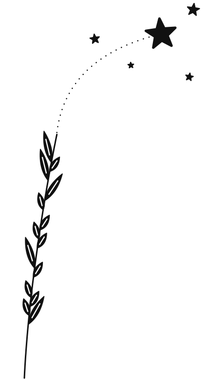
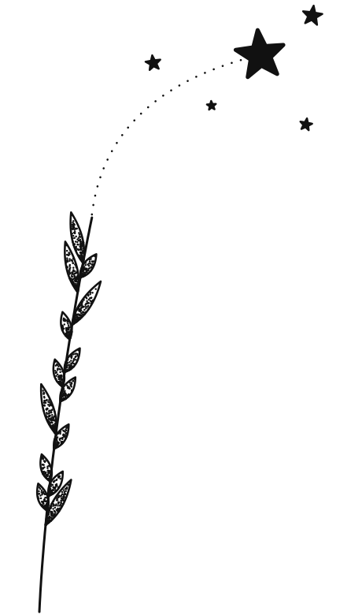

Başak taneleri, beyazsız
Mürekkep sadece siyah; tanenin içi ya karartıldı ya da ten rengi bırakıldı.

Tam karartmadolu tane, ortada ince ten çizgisiYarım karartmaönerim, ışık ve gölge

Noktalamadotwork, dipte koyu uçta açık
Yarım karartmada tanenin bir yarısı dolu, diğer yarısı ten rengi: güneş tek yandan vuruyormuş gibi derinlik verir ve kısa/uzun tane farkı net okunur. Tam karartma daha grafik ve güçlü durur. Noktalama en yumuşak geçişi verir ama dövmecinin dotwork tecrübesi ister.